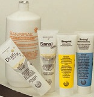
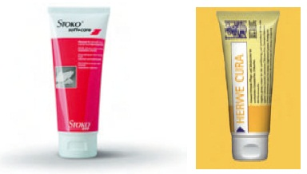
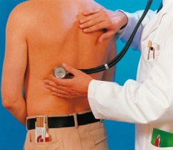

Bei Tätigkeiten mit Holzschutzmitteln
Verschmutzte Haut mit geeigneten Hautreinigungsmitteln waschen.
Nach Arbeitsende Arbeitskleidung wechseln. Straßenkleidung getrennt von Arbeitskleidung aufbewahren.
| Arbeitsstoff | Hautschutzmaterial |
| wasserlösliche Arbeitsstoffe, z.B.wasserlösliche Holzschutzmittel | wasserunlösliche Hautschutzmittel (sog. Wasser-in-Öl-Emulsionen) |
| wasserunlösliche Arbeitsstoffe, z.B. lösemittelhaltige und ölige Holzschutzmittel | wasserlösliche Hautschutzmittel (sog. Öl-in-Wasser-Emulsionen) |
Konsequenter Hautschutz bedeutet:

Hautschutzmittel haben die Aufgabe,
Verdünnungen (z.B. Nitroverdünnungen, Universalverdünnungen, Terpentinersatz) dürfen zur Hautreinigung auf keinen Fall verwendet werden.
Die Reinigungswirkung wird erzielt durch

Nach der Reinigung der Haut unbedingt Hautpflegemittel auftragen.
Geeignete Hautpflegemittel sind fett- und feuchtigkeitshaltig. Sie unterstützen die natürliche Regeneration der Haut.

Trotz technischer Arbeitsschutzmaßnahmen und der Benutzung von persönlichen Schutzausrüstungen können z.B. Betriebsstörungen oder bei einem zu sorglosen Umgang Gesundheitsschädigungen durch Holzschutzmittel nicht völlig ausgeschlossen werden. Die arbeitsmedizinische Vorsorge trägt dazu bei, arbeitsbedingte Gesundheitsgefahren frühzeitig zu erkennen und gesundheitliche Beeinträchtigungen zu vermeiden. Sie umfasst u.a. die arbeitsmedizinische Beurteilung der arbeitsbedingten Gesundheitsgefährdungen, die Empfehlung von Schutzmaßnahmen, die Aufklärung und Beratung von Beschäftigten und die Durchführung von arbeitsmedizinischen Vorsorgeuntersuchungen zur Früherkennung von Gesundheitsstörungen und Berufskrankheiten.
Die Erfordernis von über die Beratung der Beschäftigten hinausgehenden arbeitsmedizinischen Maßnahmen, insbesondere von arbeitsmedizinischen Vorsorgeuntersuchungen, hängt von der Gefährlichkeit der Stoffe und Produkte, mit denen umgegangen wird, und den technischen und organisatorischen Randbedingungen ab. Bei Arbeiten mit krebserzeugenden oder erbgutverändernden Holzschutzmitteln ist eine arbeitsmedizinische Vorsorgeunterschung meist erforderlich oder zumindest anzubieten.
Die Notwendigkeit von arbeitsmedizinischen Vorsorgeuntersuchungen sollte im Rahmen der arbeitsmedizinischen Betreuung geklärt werden.